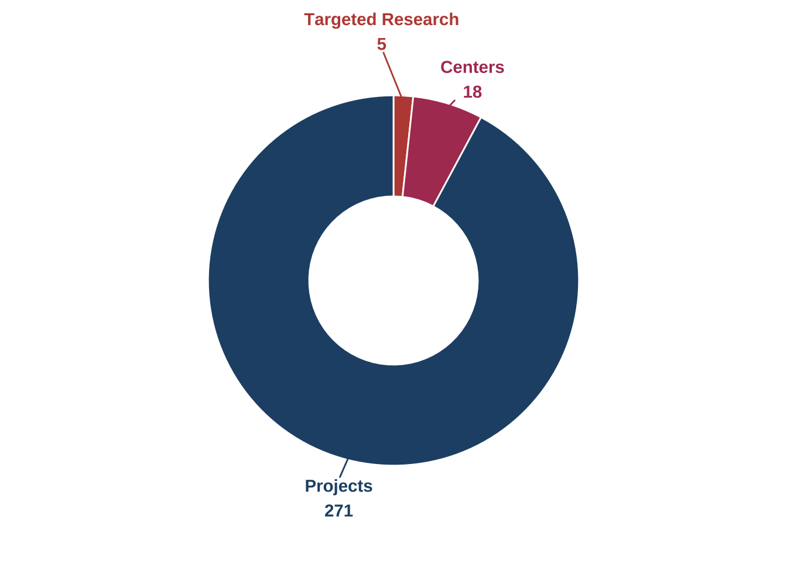
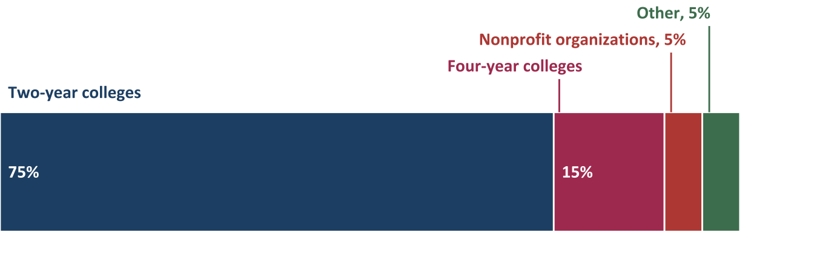
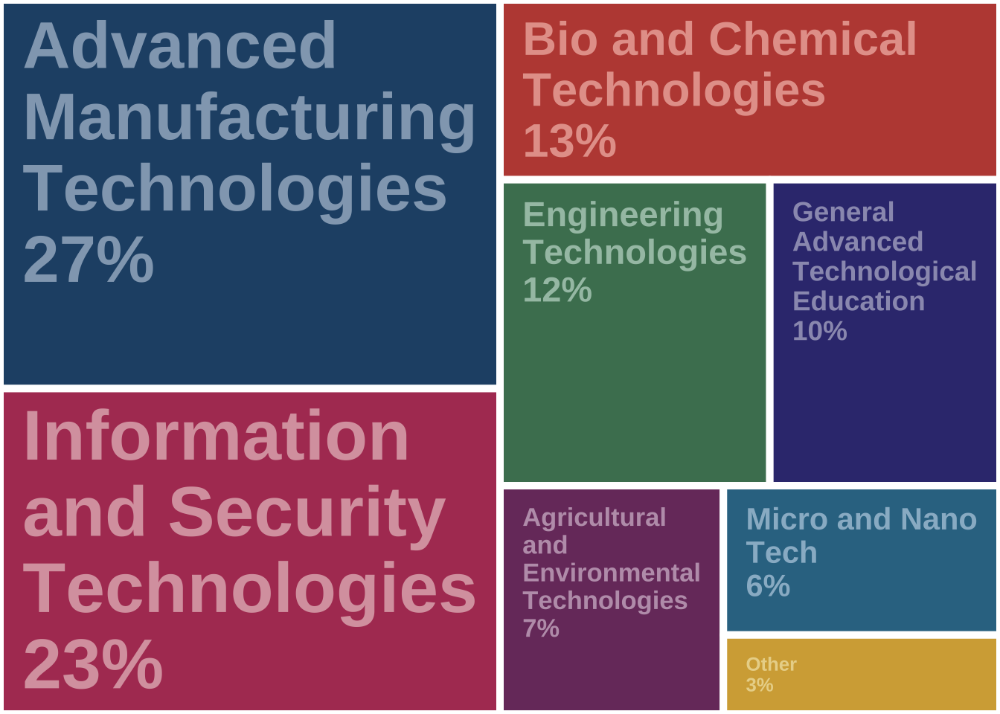
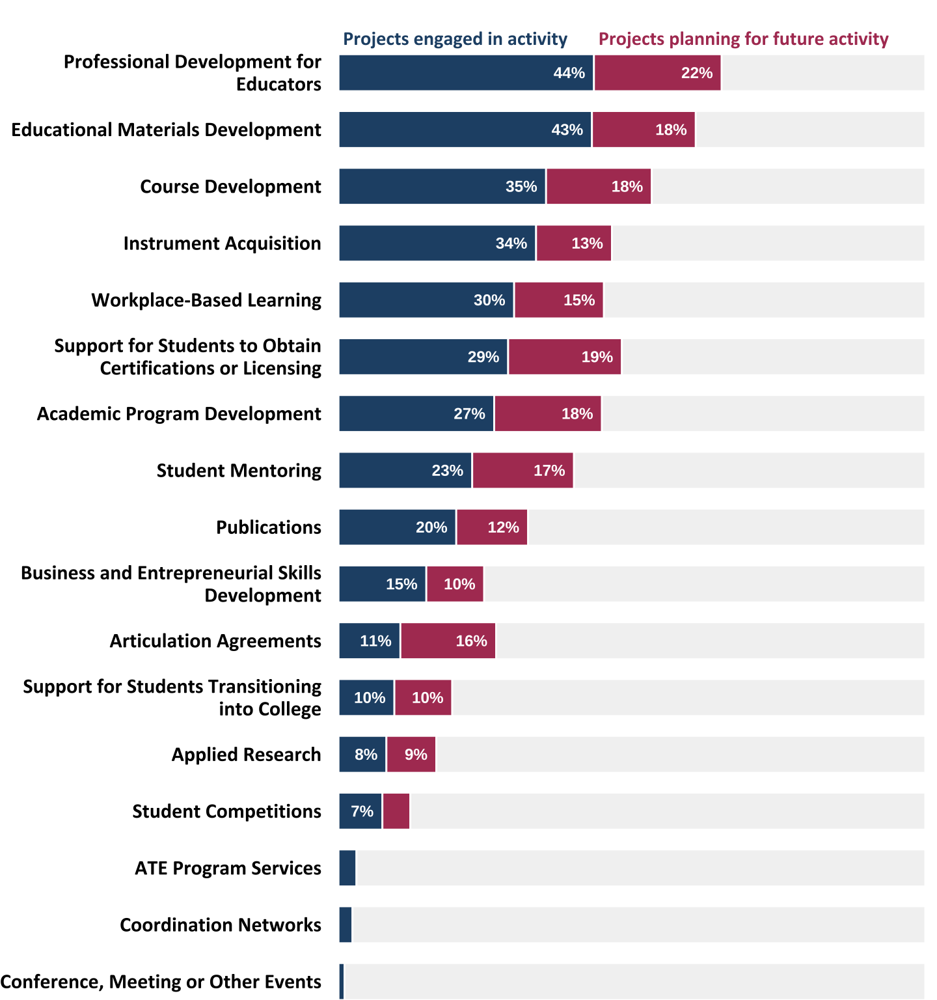
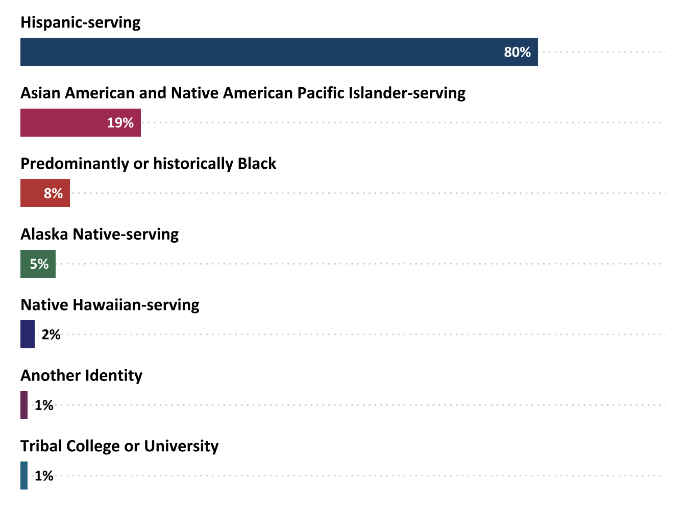
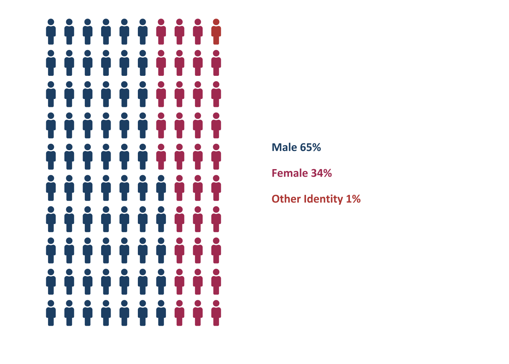
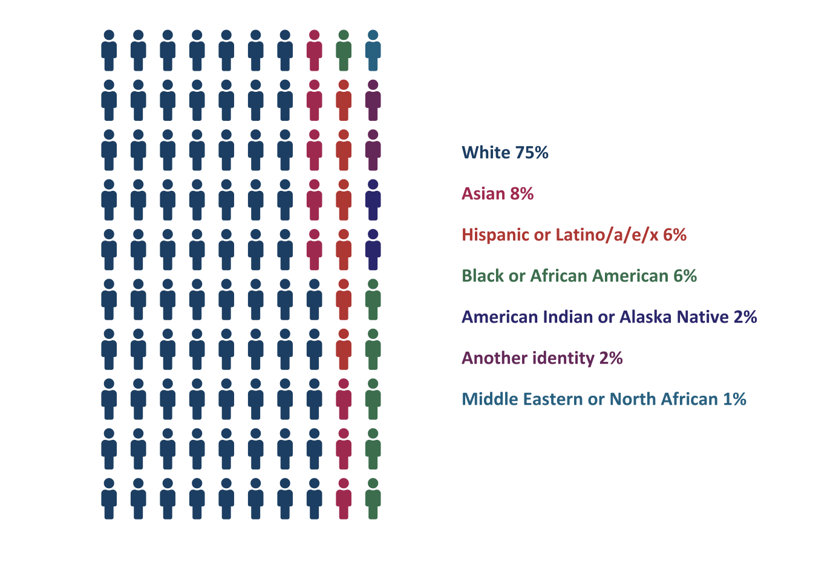

Chapter 1 ATE Grantee and Project Characteristics
1.0.0.0.1 As context for the remainder of this report, this section provides basic information about the individuals and institutions that received ATE awards, as well as key characteristics of the funded work, such as types of awards, disciplinary emphases, and nature of activities.
1.1 ATE Grant Types and Institutions
1.1.0.1 Most ATE grants support projects, and most PIs are located at two-year colleges.
ATE awards fit into four main categories: projects, centers, targeted research, and conferences and meetings. The ATE program has special funding tracks for institutions new to the program and for organizations developing plans for national centers. Ninety-two percent of ATE grants were for projects (including a variety of subcategories of project types). Among the 271 project grants, 74 were designated for institutions new to the ATE program, 7 were consortia for innovations in technical education, and 0 were coordination network grants. Of the 18 centers, 6 identified as support or resource centers, 2 as regional centers, and 10 as national centers.
1.1.0.1.1 The majority of ATE grants support projects.

Figure 1.1: Types of ATE grants awarded (n=294)
1.1.0.1.2 Most ATE grantees are located at two-year colleges, followed by four-year colleges and universities and nonprofits.

Figure 1.2: ATE grant recipient institutions (n=294)
The ATE program solicitation states that the “program focuses on IHEs that award two-year degrees in advanced technology fields and expects these IHEs and their faculty to have significant leadership roles on all projects” (National Science Foundation (NSF), 2021, p. 4). Accordingly, most ATE grants are located at two-year colleges. The 220 grants awarded to two-year colleges supported 209 projects, 11 centers. Most of the 5 targeted research projects (80%) are located at four-year colleges.
Unless specified, all types of grants—projects, centers, targeted research, and conferences—are referred to as projects in the remainder of this report.
1.2 ATE Project Disciplines
1.2.0.1 The majority of ATE projects are in the areas of advanced manufacturing technologies, information and securities technologies, and Bio and Chemical Technologies.

Figure 1.3: Disciplinary areas of ATE projects (n=294)
In alignment with the broad aim of the ATE program to improve the education of science and engineering technicians, the disciplinary emphases of ATE grantees are diverse.
1.3 ATE Project Activities
1.3.0.1 ATE projects engaged in a variety of activities in 2024 to improve the education of science and engineering technicians.

Figure 1.4: Percentage of projects that reported engaging in activities in 2024 and planning activities for the future (n=294). Responses less than 5% are not labeled.
1.4 ATE Projects at Minority-Serving Institutions
1.4.0.0.1 Ninety-one ATE projects (35%) are located at minority-serving institutions of higher education (IHEs).
1.4.0.0.2 Seventy-three ATE projects are located at Hispanic-serving institutions of higher education.

Figure 1.5: ATE projects at minority-serving institutions (n=91)
Minority-serving institutions are defined in U.S. law under Title III of the Higher Education Act of 1965. The designation is based on the percentage of minority students enrolled in the school. Of the 294 projects at IHEs, 34% are at minority-serving institutions. The majority of these IHEs (80%) are Hispanic-serving. Alaska Native-serving institutions made up 5% of IHEs, followed by 2% of IHEs located at Native Hawaiian-serving institutions, and 8% at predominantly Black or historically Black colleges and universities. 1% projects were reported to be located at Tribal colleges or universities.
1.5 ATE Principal Investigators
The ATE community is still working toward increasing diversity among PIs. Females make up 51% of the U.S. population (United States Census Bureau, 2023). Comparatively, females are underrepresented as ATE PIs, since only 35% of ATE PIs in 2024 identified as female. Fifteen percent of ATE projects have PIs who are over the age of 65, while 29% are between the ages of 55 and 64, 35% are 45–54, 18% are 35–44, and 2% are 25–34.

Figure 1.6: Gender identities of ATE PIs (n=293). Each icon represents 1%.
Fourteen percent of ATE projects have PIs from historically underrepresented racial and ethnic groups, which includes Black, Hispanic, American Indian or Alaska Native, and Middle Eastern or North African.
1.5.0.0.1 Seventy-five percent of ATE projects have a PI who identifies as white.

Figure 1.7: Racial and ethnic identities of ATE PIs (n=293). Each icon represents 1%. *Historically underrepresented racial and ethnic groups.